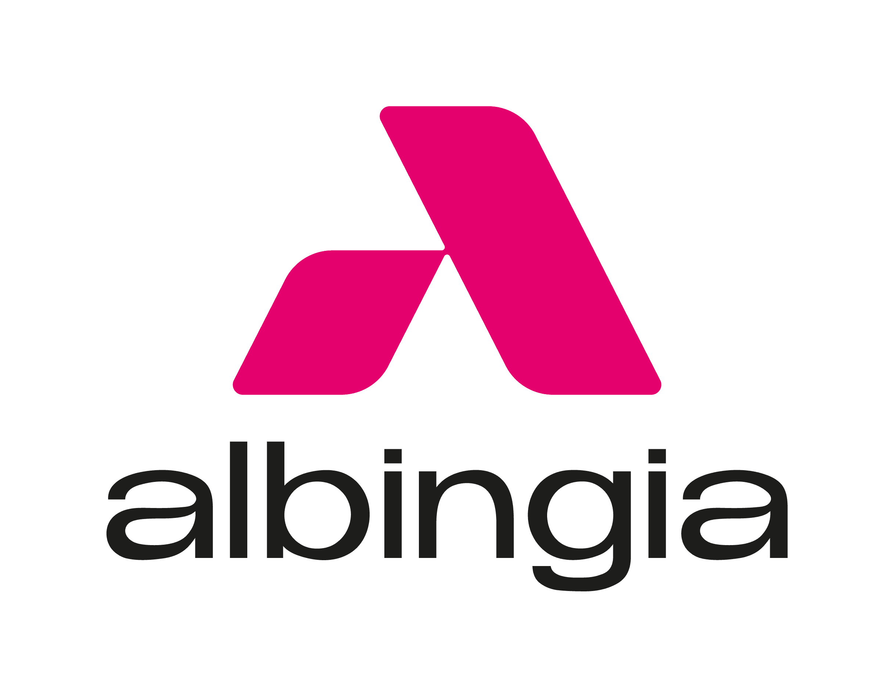

Baccalauréat
General Baccalaureate
Génie Civil
Civil
Engineering
Licence
Informatique
Bachelor
in Computer Science

Stage
Informatique
Internship
in Computer Science
Master
Data Eng. & IA
Master
in Data Eng. and AI
Data Analyst
/ Développeur BI
Développeur BI
/ Data Analyst
Développeur BI
/ Data Analyst
Data Analyst
/ BI Developer
BI Developer
/ Data Analyst
BI Developer
/ Data Analyst
Data Analyst
/ MDM Data Engineer
MDM Data Engineer
/ Data Analyst
MDM Data
Engineer
Data Analyst
/ MDM Data Engineer
MDM Data Engineer
/ Data Analyst
MDM Data
Engineer
Baccalauréat Général - Août 2018 General Baccalaureate - August 2018
Obtention du Baccalauréat Général. Ce premier succès académique a marqué le début d’un parcours orienté vers la rigueur scientifique et la logique d’analyse.
Earned the General Baccalaureate. This initial academic success marked the beginning of a path driven by scientific rigor and analytical reasoning.
École d’Ingénieur en Génie Civil - Septembre 2018 à Juin 2020 Engineering School in Civil Engineering - September 2018 to June 2020
Formation initiale à la Faculté des Sciences de l’UEH en Génie Civil. Cette période a permis de développer une forte base en mathématiques appliquées et en modélisation. Progressivement, mon intérêt s’est orienté vers la numérisation et l’automatisation des processus d’ingénierie, menant à une réorientation vers l’informatique afin d’explorer le potentiel de la donnée et des technologies émergentes.
Initial training at the Faculty of Sciences, UEH in Civil Engineering. This period helped me build a solid foundation in applied mathematics and modeling. Over time, I became increasingly interested in the digital transformation and automation of engineering processes, which naturally led me to shift toward computer science to explore the power of data and emerging technologies.
Licence Informatique - Octobre 2020 à Juillet 2023 Bachelor's Degree in Computer Science - October 2020 to July 2023
- Conception et développement d’applications informatiques
- Tests techniques et fonctionnels
- Documentation technique et support utilisateur
- Contrôle et analyse du fonctionnement des systèmes
- Modélisation et maintenance de bases de données
- Design and development of software applications
- Technical and functional testing
- Technical documentation and user support
- System performance monitoring and analysis
- Database modeling and maintenance
Stage Développeur CRM Microsoft Dynamics 365 - Mai à Août 2023 Internship - CRM Developer Microsoft Dynamics 365 - May to August 2023
Stage réalisé chez Albingia sur le poste de Développeur CRM Microsoft Dynamics 365.
Internship at Albingia as a CRM Developer - Microsoft Dynamics 365.
- Optimisation des bases de données relationnelles afin d’améliorer les performances des requêtes SQL
- Développement de Web Services en C# pour automatiser les échanges de données avec le CRM
- Intégration et fiabilisation des données afin d’améliorer leur exploitation par les équipes métiers
- Optimisation des bases de données relationnelles pour améliorer les performances des traitements de données
- Développement de Web Services en C# pour automatiser l’intégration de données de Microsoft Dynamics 365
- Contribution à la qualité, à la cohérence et à la disponibilité des données pour les usages analytiques
- Développement de Web Services C# pour automatiser les échanges de données avec Microsoft Dynamics 365
- Optimisation des bases de données afin d’améliorer les performances des flux et traitements de données
- Conception d’une architecture d’intégration favorisant la fiabilité et la disponibilité des données
- Optimized relational databases to improve SQL query performance
- Developed C# Web Services to automate data exchanges with the CRM
- Improved data reliability to support business teams’ use of the data
- Optimized relational databases to improve data processing performance
- Developed C# Web Services to automate Microsoft Dynamics 365 data integration
- Contributed to data quality, consistency and availability for analytical use cases
- Developed C# Web Services to automate data exchanges with Microsoft Dynamics 365
- Optimized databases to improve the performance of data flows and processing
- Designed an integration architecture promoting data reliability and availability
Master Data Engineering & Intelligence Artificielle - Septembre 2023 à Juillet 2025 Master’s Degree in Data Engineering & Artificial Intelligence - September 2023 to July 2025
- Conception de Data Lakes et architectures cloud
- Optimisation des pipelines de traitement
- Sécurisation et gouvernance des données
- Implémentation d’algorithmes de Machine Learning
- Création de tableaux de bord interactifs
- Design of Data Lakes and cloud architectures
- Optimization of data processing pipelines
- Data security and governance practices
- Implementation of Machine Learning algorithms
- Creation of interactive dashboards and analytics
Data Analyst / Développeur BI - Septembre 2023 à Septembre 2025 Développeur BI / Data Analyst - Septembre 2023 à Septembre 2025 Développeur BI / Data Analyst - Septembre 2023 à Septembre 2025 Data Analyst / BI Developer - September 2023 to September 2025 BI Developer / Data Analyst - September 2023 to September 2025 BI Developer / Data Analyst - September 2023 to September 2025
- Développement de 15+ tableaux de bord Power BI pour le suivi des KPI métier
- Conception de modèles sémantiques et de cubes OLAP pour l’analyse multidimensionnelle
- Développement de pipelines ETL avec SQL et Python
- Intégration de données multi-sources et contrôle de leur qualité
- Collaboration avec les équipes métiers pour formaliser les besoins décisionnels
- Analyse et résolution des demandes de reporting
- Développement de 15+ tableaux de bord Power BI pour le pilotage des indicateurs métiers
- Conception de pipelines ETL automatisés avec Python et SQL
- Préparation, transformation et analyse de données provenant de multiples sources
- Modélisation de données pour des analyses multidimensionnelles
- Collaboration avec les équipes métiers afin de transformer les besoins fonctionnels en solutions analytiques
- Développement de pipelines ETL pour la collecte et la préparation de données multi-sources
- Modélisation de données pour l’analyse décisionnelle et les usages analytiques
- Développement de tableaux de bord Power BI pour le suivi des KPI
- Collaboration avec les équipes métiers afin de transformer les besoins en solutions Data
- Mise en œuvre de bonnes pratiques de qualité des données
- Developed 15+ Power BI dashboards to track business KPIs
- Designed semantic models and OLAP cubes for multidimensional analysis
- Built ETL pipelines using SQL and Python
- Integrated multi-source data and monitored data quality
- Collaborated with business teams to formalize decision-making needs
- Analyzed and resolved reporting requests
- Developed 15+ Power BI dashboards to track business KPIs
- Designed automated ETL pipelines using Python and SQL
- Prepared, transformed and analyzed data from multiple sources
- Modeled data for multidimensional analysis
- Collaborated with business teams to translate functional needs into analytical solutions
- Built ETL pipelines to collect and prepare multi-source data
- Modeled data to support decision-making and analytical use cases
- Developed Power BI dashboards to track KPIs
- Collaborated with business teams to translate needs into Data solutions
- Applied data quality best practices
Data Analyst / MDM Data Engineer - Septembre 2025 à Aujourd’hui MDM Data Engineer / Data Analyst - Septembre 2025 à Aujourd’hui MDM Data Engineer - Septembre 2025 à Aujourd’hui Data Analyst / MDM Data Engineer - September 2025 – Present MDM Data Engineer / Data Analyst - September 2025 – Present MDM Data Engineer - September 2025 – Present
- Conception et structuration de modèles de données au sein du Master Data Management (MDM)
- Développement de flux de reprise de données (SQL) : extraction, transformation, validation et contrôle de la qualité des données
- Création de tableaux de bord et de rapports avec Power BI pour le suivi des indicateurs et l’aide à la décision
- Analyse des données et accompagnement des équipes métiers dans l’interprétation des résultats
- Production et suivi de KPI, en contribuant à l’amélioration de la gouvernance et de la qualité des données
- Conception de modèles de données MDM garantissant la qualité et la cohérence des données de référence
- Développement de services de reprise et d’intégration de données via SQL et traitements automatisés
- Mise en œuvre de règles de qualité des données et optimisation des flux d’intégration
- Analyse des données afin d’identifier des anomalies et d’améliorer les processus décisionnels
- Mise en œuvre de bonnes pratiques de qualité et de gouvernance des données
- Conception d’architectures de données MDM pour fiabiliser les données de référence
- Développement de services d’intégration et de reprise de données à l’aide de SQL et de traitements automatisés
- Implémentation de règles de qualité des données garantissant leur exploitabilité dans les applications Data et IA
- Optimisation des flux de données destinés aux usages analytiques et aux modèles d’Intelligence Artificielle
- Participation à la gouvernance des données et à l’industrialisation des processus d’intégration
- Designed and structured data models within the Master Data Management (MDM) framework
- Built SQL-based data recovery flows: extraction, transformation, validation and quality control
- Created Power BI dashboards and reports to track indicators and support decision-making
- Analyzed data and supported business teams in interpreting results
- Produced and monitored KPIs, contributing to improved data governance and quality
- Designed MDM data models ensuring the quality and consistency of reference data
- Developed SQL-based data recovery and integration services with automated processing
- Implemented data quality rules and optimized integration flows
- Analyzed data to identify anomalies and improve decision-making processes
- Applied data quality and governance best practices
- Designed MDM data architectures to ensure reliable reference data
- Developed data integration and recovery services using SQL and automated processing
- Implemented data quality rules ensuring data usability across Data and AI applications
- Optimized data flows for analytical use cases and Artificial Intelligence models
- Contributed to data governance and the industrialization of integration processes